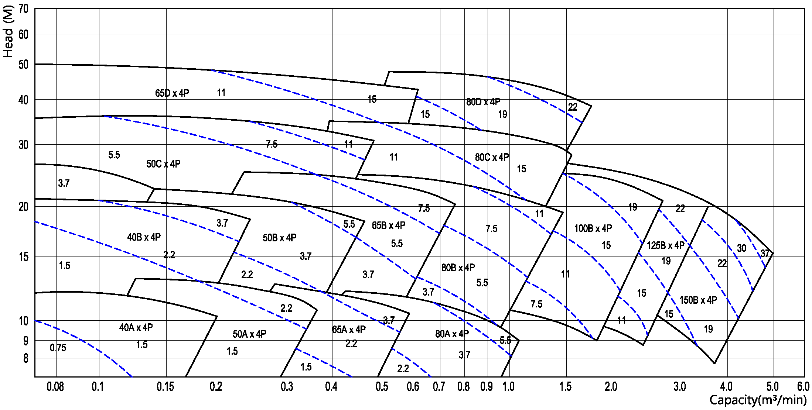

-
운전 테이터 사양
- 사용 유량 : 0.05 m³/min ~ 5.5 m³/min
- 사용 양정 : 3 m ~ 48 m
- 흡입 구경 : ø40 mm ~ ø150 mm
- 회전 방향 : CW(구동측에서 펌프를 바라보았을 때 우회전)
용도 및 적용 분야
- 공해폐액 처리용, 화학액용, 기타 각종 폐액처리용, 펄프원료 이송용, 슬러지, 슬럿지, 고형물질 함유액체 이송 등
-
설계 및 구조적 특성
- 볼텍스 펌프는 입축 매달림 구조 및 외팔보형 구조, 횡형 및 입형의 드라이 핏트용, 웨트 핏트용 등과 같이 다양한 종류가 있다.
- 중부하용 베어링 하우징과 회전부품을 포함한 케이싱 카버를 쉽게 뒤로 빼낼 수 있는 후방 취출 구조로 설계되어 있으므로 흡입 또는 토출 배관을 건드리지 않고도 펌프를 정비 할 수 있다.
- 취급액체의 성질에 맞추어 팩킹을 장착하거나 메케니칼 씨일을 장착할 수 있다.
- 볼텍스 펌프는 운전조건에 따라서 주철, 주강, 스텐레스강, 청동 등 다양한 재질로써 제조된다.
- 펌프 케이싱 전체에 걸쳐 거의 방해물이 없는 통로로 되어 있으므로 물체는 임펠러 베인 사이를 통과하지 않고 임펠러 앞쪽으로 흐르게 된다. 따라서 참으로 막히지 않는 특성이 구비되며 대형, 섬유상 끈모양의 고형물, 부유슬라리, 오수 등을 막힘 없이 용이하게 취급 할 수 있게 된다
- 배면 깃이 축추력과 스터핑 박스 압력을 줄이게 되므로 씨일, 팩킹, 슬리이브, 베어링 등의 수명이 연장된다
- 펌핑 작용이 임펠러 베인에 의해 발생된다기 보다는 유도된 볼텍스에 의해 기인 되므로 낮은 NPSH의 공기함유펄프,침전물 찌꺼기,가스 또는 공기 함유액체 등의 취급에 탁월한 능력을 발휘한다.
- 케이싱 내의 압력이 점진적으로 형성되므로 액체의 취급이 정숙하게 되어 결정체에 대한 손상이 적어진다.
- 파손되기 쉬운 물질이나 입자도 최소한의 손상으로써 취급 가능하다.
- 케이싱 내에서 볼텍스 회전속도가 점진적으로 변화하는 고로 완벽한 혼합을 할 수 있게 된다
성능 곡선도 (Performance Curve)
